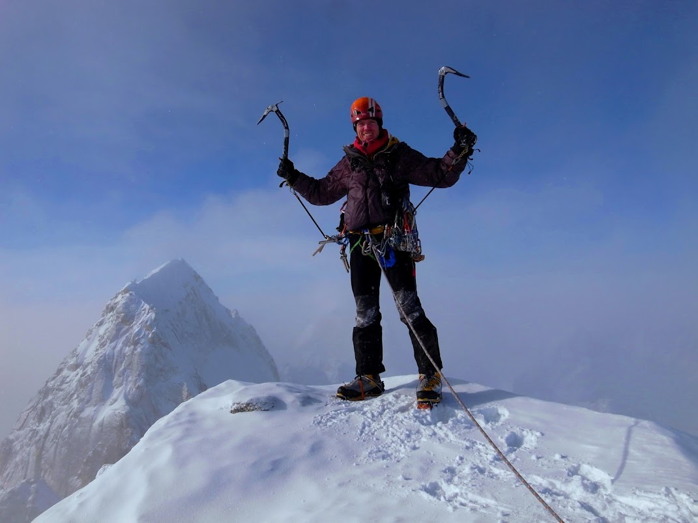

Our new line follows a series of ice runnels to the left of the ‘Supa Dupa Couloir’ established in 2003 by Mike ‘Twid’
Turner, Stu McAleese and Olly Sanders.
Initial snow and ice pitches in the couloir led up to a very steep corner with difficulties of AI5+ and M6+. Jess was
the ropegun on these pitches. At sunset we chopped a ledge on a 60 degree ice slope and suffered through a sitting bivy
in the cold Alaskan night. We had brought a small tent, but it did not fit our ledge and collapsed on us during the
night. Early the next day we arrived at the col, which marks the end of the couloir. From there Ben led several pure
rock pitches on the relatively warm south ridge. The first pitch off the col was steep A3. He then climbed the 5.10R
crux without gloves and crampons, which was a full 60 meter pitch. We reached the summit ridge that evening, but bivied
only a stones through from the actual summit on the east side of the ridge. We once again settled in for a sitting bivy
on a chopped ice ledge. After a very uncomfortable night we rappelled down a gap on the west face, which took us to an
easy snow ramp that lead directly to the summit. The summit itself consisted of two large granite blocks about five
meters high, which from a distance looked unclimbable. Fortunately there was an easy way up on their back side. After a
short brew stop, we then faced an arduous descent down the north ridge where our rappel lines got stuck several time,
and we had lots of exposed down climbing and also had to rappel off our only two snowstakes. In the last rays of the sun
we did one final rappel off a spectre-hook, which was hammered less than 3 cm into an icy crack, but even scarier it was
flexing under bodyweight. However, it got us over the bergschrund with one meter of rope to spare and we reached the
safety of the flat glacier terrain. We stumbled back into our base camp 70 hours after having left it.
We jokingly named our new route the ‘Hypa Zypa Couloir’ in keeping with the name of the ‘Supa Dupa’. That way the Super
and Hyper couloirs of the Kichatnas are located side by side unlike in the Alps. The overall difficulty of our route is
American commitment grade VI corresponding to European ‘ED+’ with technical pitches of AI5+, M6+, 5.10R, A3 and a
vertical height of 3700 feet (ca. 1100 meters).